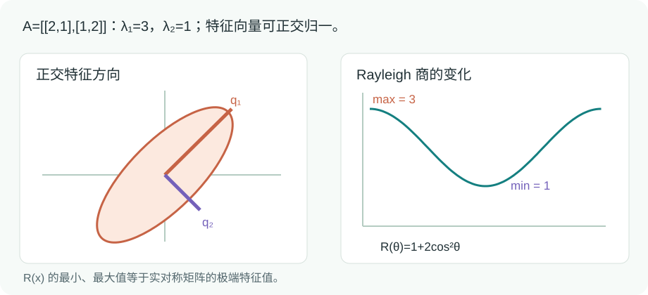

01 / 为什么实对称矩阵永远不会缺少正交特征基？
一般方阵可能出现复特征值、Jordan 块与非正交的特征向量。但如果 A 是实对称矩阵 Aᵀ=A，情况完全不同：它一定拥有一组实特征值以及对应的正交归一特征向量，因而能通过正交基变换变成对角矩阵。这就是实对称谱定理。

在复数域中，对应结论适用于 Hermitian 矩阵 A*=A，表达为酉对角化 A=UΛU*。一般非对称方阵不能被假定具有这样的正交特征基。
02 / 用 2×2 例子拆解谱定理
令 A=[[2,1],[1,2]]。容易验证 A(1,1)ᵀ=3(1,1)ᵀ，而 A(1,−1)ᵀ=(1,−1)ᵀ。标准化得到 q₁=(1,1)/√2 和 q₂=(1,−1)/√2，两向量正交且长度为 1。
所以 Q=(q₁,q₂)、Λ=diag(3,1)，A=3q₁q₁ᵀ+1q₂q₂ᵀ。这是一种“按主方向独立伸缩后再合成”的解释。正定性也可以从这里直接得到：所有特征值为正，因此任意非零 x 的 xᵀAx>0。
03 / Rayleigh 商为何能找出极端特征值？
对实对称 A 和任何非零向量 x，定义 R_A(x)=xᵀAx/(xᵀx)。在正交特征基中，令 x=Σcᵢqᵢ，便有 R_A(x)=Σλᵢcᵢ²/Σcᵢ²。这是特征值的非负加权平均，因此绝不会落在最小、最大特征值之外。
在本例选取相对于 q₁ 的夹角 θ，单位向量可写为 x=cosθ·q₁+sinθ·q₂。此时 R_A(x)=3cos²θ+1sin²θ=1+2cos²θ。
04 / Courant–Fischer 为什么是子空间优化定理？
设 λ₁≥λ₂≥…≥λₙ 是实对称矩阵的特征值。Courant–Fischer 通过选 k 维子空间，使子空间内部最小的 Rayleigh 商尽可能大，精确给出第 k 大特征值。
如果 k=1，它等价于寻找 Rayleigh 商最大的方向；如果 k=n，只能选择整个空间，其最小商等于 λₙ。推广结论也是 PCA 与谱划分等方法的变分基础。
05 / 谱分解、SVD 与极分解有什么不同？
谱定理主要约束自伴随矩阵的结构；SVD 可处理任意矩形矩阵 A=UΣVᵀ；极分解则在实方阵情况下写为 A=UH，其中 H 是半正定对称矩阵（H=(AᵀA)^{1/2}）。当 A 可逆时正交因子 U 唯一；A 奇异时需注意非唯一性。
| 分解 | 适用对象 | 核心输出 |
|---|---|---|
| 谱分解 | 实对称 / 复 Hermitian | 正交特征方向与实特征值 |
| SVD | 任意实/复矩阵 | 左右奇异向量和非负奇异值 |
| 极分解 | 方阵；矩形可推广 | 正交/部分等距因子与半正定因子 |
QΛQᵀ 是错误的；非正规矩阵可能没有正交特征向量，甚至不可对角化。06 / 用小规模数值检查正交谱分解
from math import sqrt,isclose
A=((2.,1.),(1.,2.))
s=1/sqrt(2)
Q=((s,s),(s,-s))
D=((3.,0.),(0.,1.))
def matmul(X,Y):
return tuple(tuple(sum(X[i][k]*Y[k][j] for k in range(2))
for j in range(2)) for i in range(2))
QT=tuple(zip(*Q))
assert all(isclose(matmul(Q,QT)[i][j],float(i==j),abs_tol=1e-12)
for i in range(2) for j in range(2))
out=matmul(matmul(Q,D),QT)
assert all(isclose(out[i][j],A[i][j],abs_tol=1e-12)
for i in range(2) for j in range(2))
print("A = Q D Q^T verified")预期输出：A = Q D Q^T verified。这验证的是给定 2×2 数值矩阵，定理的任意维形式仍需数学证明。